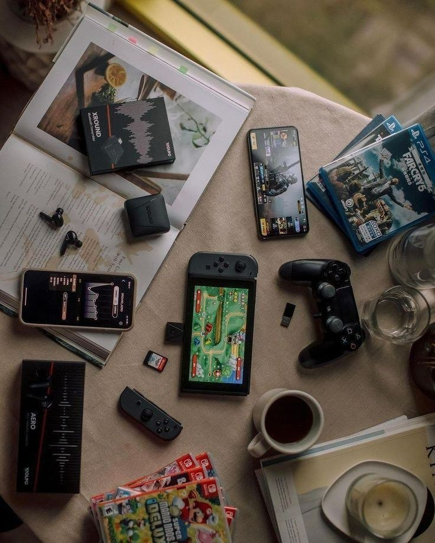
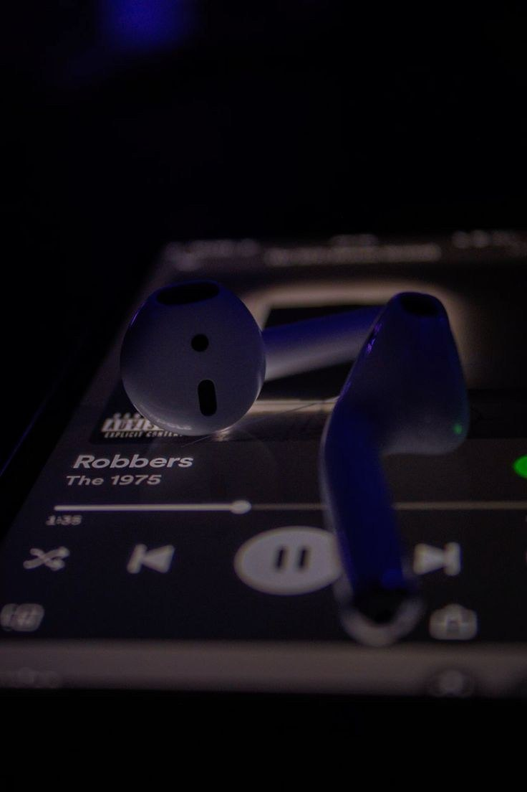
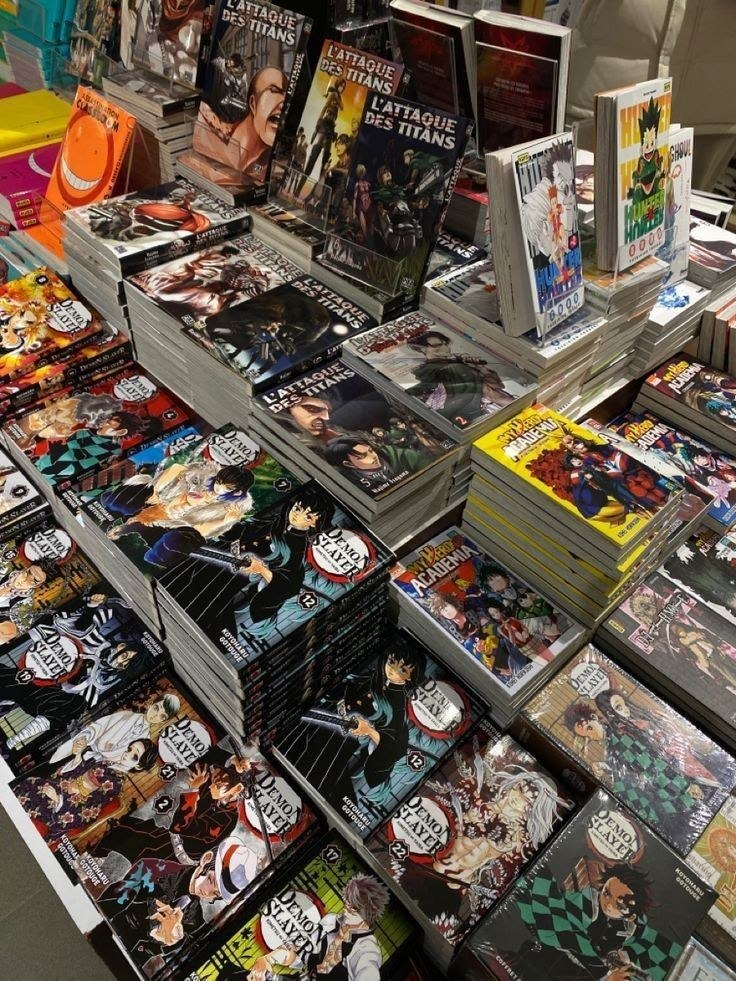

Jeux Vidéo & E-Sport
Jouer me permet de décompresser, mais c'est aussi une excellente façon d'observer le game design, les mécaniques de résolution de problèmes et de collaborer en équipe lors de parties multijoueurs.
Pour garder un bon équilibre et stimuler ma créativité, voici comment j'occupe mon temps libre.

Jouer me permet de décompresser, mais c'est aussi une excellente façon d'observer le game design, les mécaniques de résolution de problèmes et de collaborer en équipe lors de parties multijoueurs.

La musique est mon moteur. Que ce soit pour me concentrer pendant une longue session de code ou pour me détendre après une journée de cours à l'UDBL, elle m'accompagne partout.

J'aime lire des articles sur les nouvelles tendances tech, l'évolution des frameworks ou encore des œuvres de science-fiction qui imaginent le futur de notre société avec la technologie.

Je suis passionné par les mangas, non seulement pour leur aspect divertissant, mais surtout pour ce qu’ils transmettent. C’est un univers qui mélange créativité, discipline et narration forte. À travers ces œuvres, j’ai développé un intérêt pour les histoires bien construites, les personnages complexes et les messages profonds. Cette passion m’a aussi appris à analyser, comprendre des points de vue différents et à apprécier le travail derrière chaque détail, que ce soit dans le dessin ou dans l’écriture.